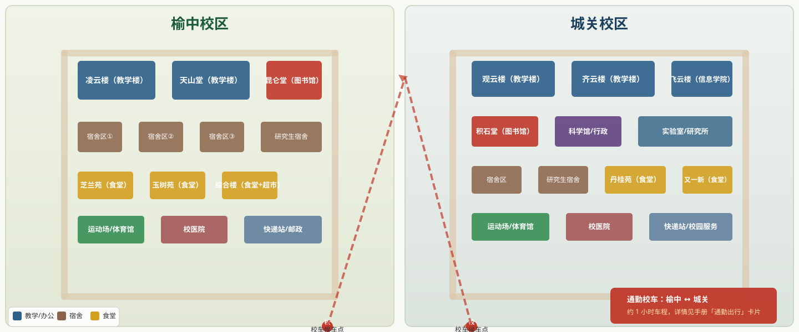

榆中校区
地址：兰州市榆中县夏官营镇。本科生主校区，距离市区约 50 公里。主要建筑：天山堂、昆仑堂、凌云楼。从兰州站乘 903 路公交或校车可达。
给第一次来到兰大的你
把报到前后最容易卡住的事放在一个公开网页里：住哪、去哪、吃什么、怎么联系、校园卡怎么用、军训和转专业要看哪些通知。
资料入口核验日期：。具体安排以学校及学院当年通知为准。
Guide
这些内容适合公开展示。每一块都保留了“官方核验入口”，方便之后按当年通知更新。
没有找到匹配内容，换个关键词试试。
Map
已接入兰州大学官网“校园地图”入口，后续可以继续把校区导视图、快递站点和到校路线细化到真实点位。

地址：兰州市榆中县夏官营镇。本科生主校区，距离市区约 50 公里。主要建筑：天山堂、昆仑堂、凌云楼。从兰州站乘 903 路公交或校车可达。
地址：兰州市城关区天水南路 222 号。研究生和部分学院所在地，紧邻市区。主要建筑：观云楼、齐云楼、积石堂。地铁 1 号线兰州大学站直达。
校车每天往返两校区，约 1 小时车程，凭校园卡刷卡乘车。具体时刻表请关注后勤保障部通知，高峰期建议提前 20 分钟到达候车点。
Links
公开网页最有价值的部分之一，是把分散入口集中起来。下面的链接建议发布前逐条核验。
Maintain
宿舍分配、军训安排、快递站点、校历和转专业政策都会随年份变化。这个网页适合采用“稳定说明 + 当年通知链接”的维护方式。